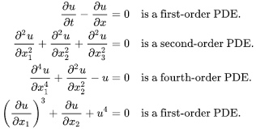
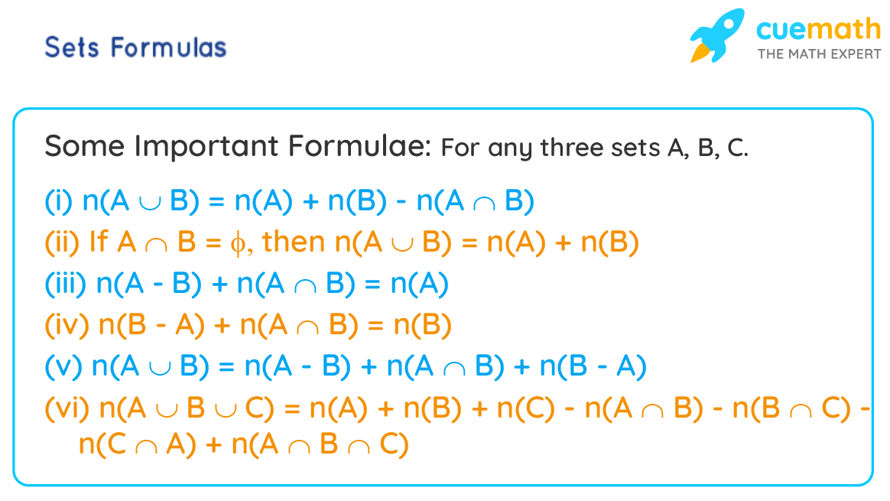
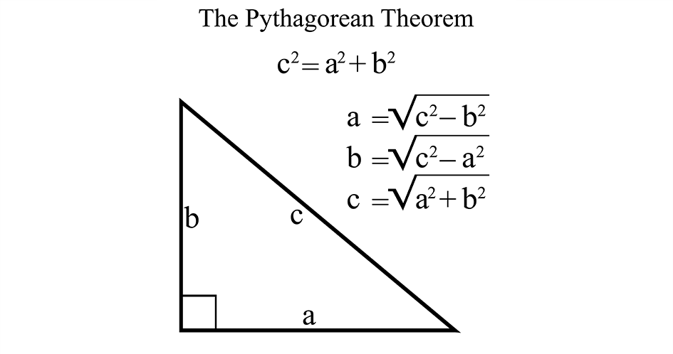
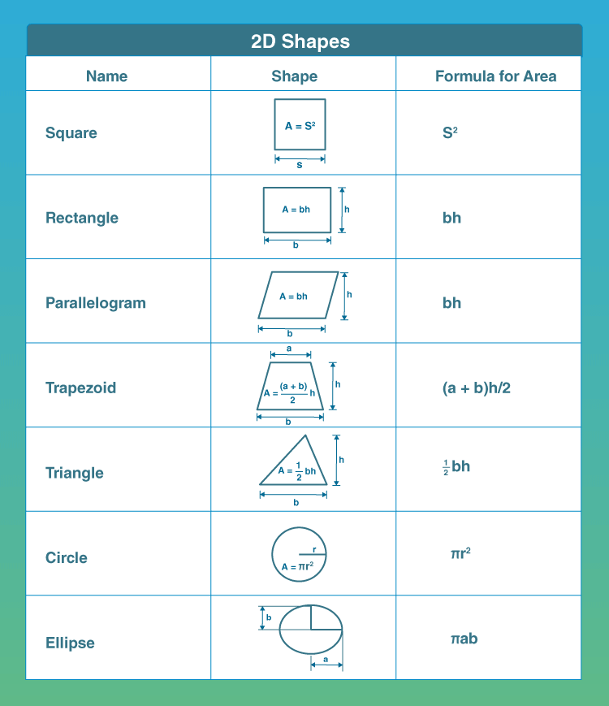
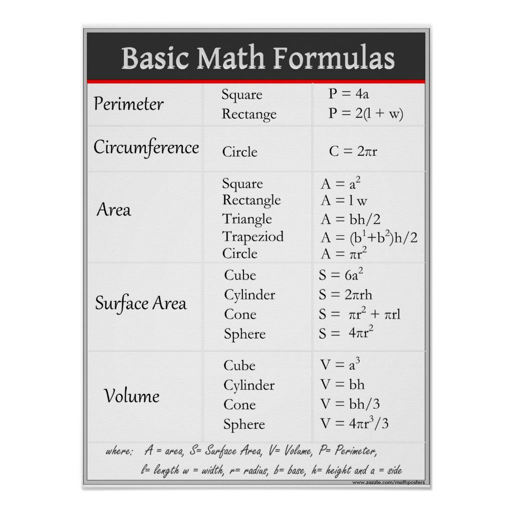
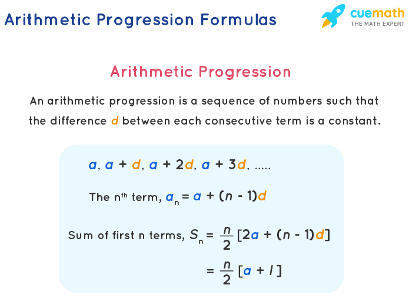
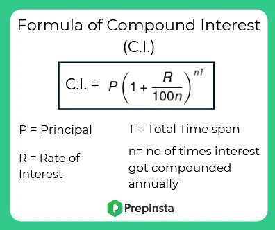

1.Formula For Partial Differintial Equations:
A partial differential equation is an equation containing an unknown function of two or more variables and its partial derivates with respect of these variables. A solution of a partial differential equation is any function that satisfies the equation identically.A singular solution is a solution that contains a number of arbitrary independent functions equal to the order of the equation. A singular solution is one that cannot be obtained from the general solution by a particular choice of arbitrary functions.
2.Sets Formulas:
Set formulas are the formulas associated with set theory in mathematics.Set is a collection of well-defined objects and it has distinct elements.Knowledge of sets helps us apply the set formulas, in the areas related to statistics,probability,geometry,and sequences. The set formulas include the union,intersection,complement, and difference of sets. Venn diagrams are popularly used to visualize set formulas to arrive at their proof.Set formulas have been derived from the set theory, and that can be used for ready reference.
3.Pythagoras Theorem:
Pythagoras theorem , the well known geometric theorem that the sum of the squares on the legs of a right triangle is equal to the square on the hypotenuse or in familiar algebraic notation, a2 + b2 = c2. Although the theorem has long been associated with Greek mathematician philosopher Pythagoras(c. 570-500/499 BCE), it is actually far older.
4.Area and Perimeter Formula Chart:
Area and perimeter, in Maths are the two important properties of two dimensional shapes.Perimeter defines the distance of the boundary of the shape whereas area explains the region occupied by it. Area and Perimeter is an important topic in mathematics, which is used in everyday life. This is applicable to any shape and size whether it is regular or irregular.Every shape has its own area and perimeter formula.
5.Basic Math Formulas:
A formula is a mathematical expression or definite rule that is derived from the relation between two or more quantities and the derived final product is expressed in symbols. The formulas of mathematics included numbers known as constants, letters that represent the unknown as variables, mathematical symbols known as signs, and exponential powers in some cases.
6.Arithmetic Progression Formula:
Arithmetic Progression(AP) is a sequence of numbers in order in which the difference between any two consecutive numbers isd a constant value. It is also called Arithmetic Sequence. For example, the series of natural numbers:1,2,3,4,5,6,... is an Arithmetic Progression, which has a common difference between two sucessive terms(say 1 and 2) equal to 1(2-1).Even in the case of odd numbers and even numbers, we can see the common difference between two successive terms will be equal to 2.
7.Compound Interest Formula:
Compound interest is the interest calculated on the principal and the interest accumulated over the previous period. It is different from simple interest, where interest is not added to the principal while calculating the interest is not added the principal while calculating the interest during the next period. In Mathematics, compound interest is usually denoted by C.I.
Compound interest finds its usage in most of the transaction in the bankking and finance sectors and other areas.Some of its applications are: